Written by: Catherine Spurin
The storage of CO₂ in underground saline aquifers will be integral in reducing anthropogenic emissions, and meeting the targets laid out by the 2015 Paris agreement [1], [2]. Finding ways to improve trapping in the subsurface, and minimizing CO₂ plume spread will be important in CCS (carbon capture and storage) projects as this improves storage security and reduces costs [3].
This page serves as my documentation of learning to perform numerical simulations.
In this work we are simulating core-scale multiphase flow experiments. The cores were imaged using clinical CT imaging. The following things are needed from the experiments:
In this work, we are using experimental results where small-scale heterogeneities dominated flow, leading to channellized flow of the CO₂ in the core. As a result, the core averaged CO₂ saturations were low, but localized CO₂ saturations were high. Steep water relative permeability curves were also observed.
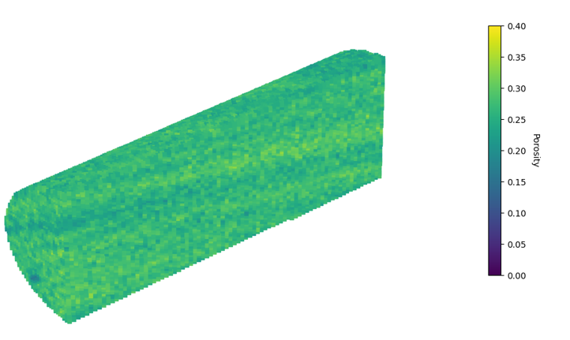
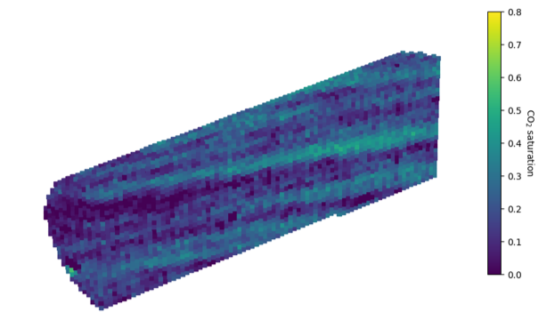
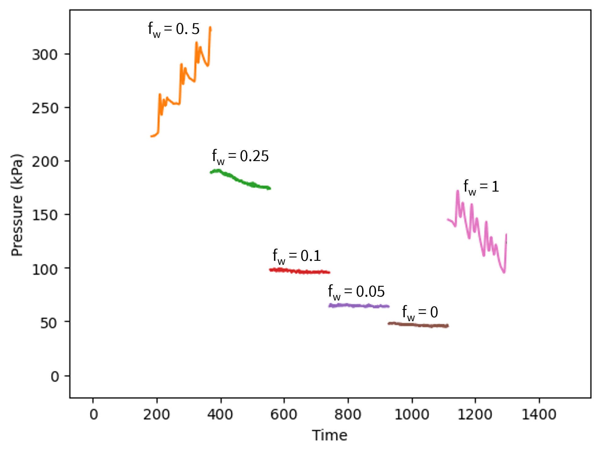
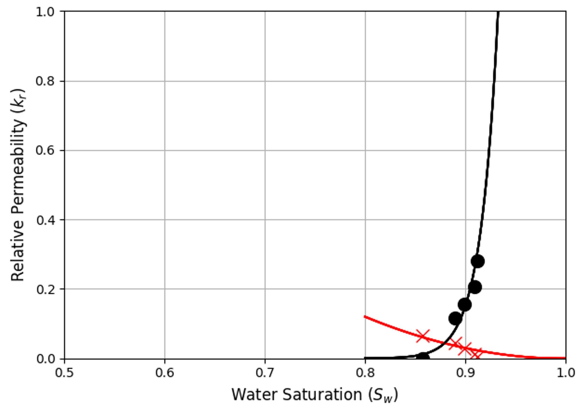
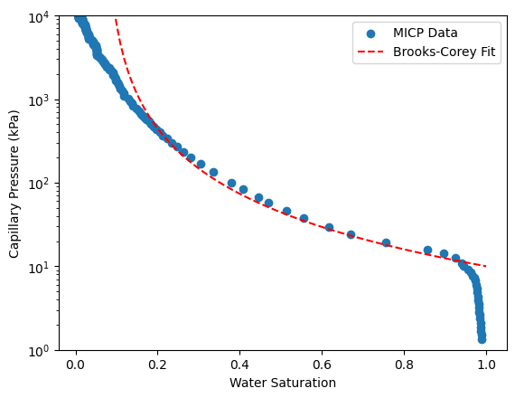
Before you can run a simulation, you need the following things:
The code to generate the run file are available on GitHub. The following variables need to be changed to match your experiment:
write_dat_file(
output_path="Path_to_files/run_1.dat",
nx=14, ny=74, nz=14, #the voxel dimensions
dx=0.002455556, dy=0.002, dz=0.002455556, #the voxel size
PorAve_core=0.33, #core averaged porosity
k_abs=365, #core averaged permeability in mD
PRPOR=8000, #pore pressure in kPa
CPOR=.30E-07, #rock compressibility
temp_av=50, #temperature
rho_g=604.4, #density CO2
rho_w=1021.9, #density water
BWI=1.0, #water formation volume factor (for a PVT region)
CW=3.03E-08, #water compressibility (for a PVT region)
REFPW=101.5, #reference pressure (for a PVT region)
VWI=0.5816, #viscosity water
CVW=0, #pressure dependence of water viscosity
REFDEPTH=0, #reference depth
DWGC=0, #water-gas contact depth
DTMIN=1e-10, #minimum timestep
NORTH=200, #max number of orthogonalizations
ITERMAX=200, #max number of iterations
NCUTS=100 #number of time-step size cuts allowed in single timestep
)
The results for the simulation without capillary pressure heterogeneity are shown in Figure 6 and 7. The saturation is poorly predicted and the results are useless.
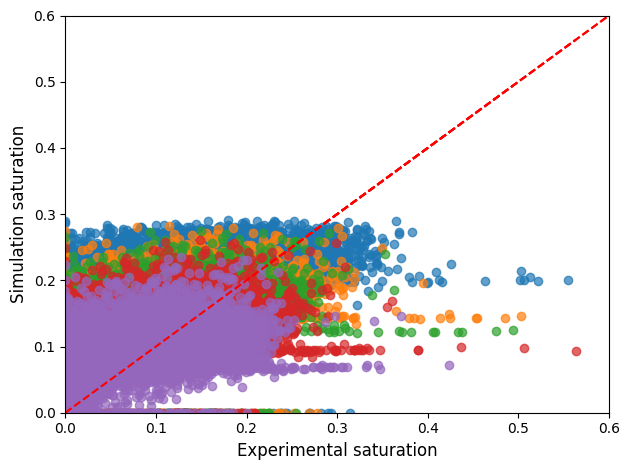
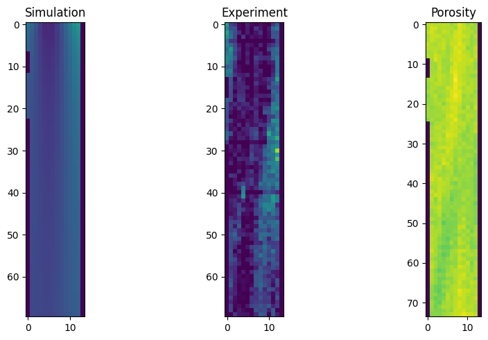
Capillary heterogeneity influences saturation significantly. Variations in capillary heterogeneity can be incorporated at the voxel level by assigning a variable endpoint capillary pressure value for each voxel.
For an initial guess of the capillary pressure heterogeneity, we assume that the capillary pressure is constant in each slice along the direction of flow. The slice averaged capillary pressure, \(\bar{P}_c\), is calculated from the slice averaged saturation using the Brooks-Corey fit of the capillary pressure MIP data. Variations in saturation at the voxel level are assumed to be due to capillary pressure heterogeneity. The voxel level capillary pressure, \(P_{c,i}\), is mapped to the slice averaged capillary pressure by:
$$P_{c,i} = \kappa_i \, \bar{P}_c.$$
\(\kappa_i\) could be calculated for a single experiment as a first guess, but should be optimized across all fractional flows. This is done by performing a optimization of the following function:
$$ \Phi = \sum_i^{N_{vovels}} \sum_j^{N_{fractional flows}} \sqrt{ \left( \kappa_i \tilde{P}_c - P_{c,i} \right)^2 } \cdot \sqrt{\left(S^{(\mathrm{calc})} - S_{ij}^{(\mathrm{exp})} \right)^2 } $$
where \(S_{ij}^{(\mathrm{exp})}\) is the experimental saturation for that voxel and \(S^{(\mathrm{calc})}\) is the saturation predicted from the new capillary pressure map i.e. the saturation predicted with the updated \(\kappa_i \, \bar{P}_c\).
The variable \(\kappa_i\) is multiplied by the endpoint capillary pressure and input as a .inc file in the simulation. Running the same simulation as before, but with capillary pressure heterogeneity leads to the results shown in Figure 8 and 9. With this addition we get a correlation between simulated and experimental saturation values. From the slice across the core in the direction of flow (Figure 9), we can observe that the flow pattern has been captured but the simulated saturation values are too high in the low saturation regions of the experiment.
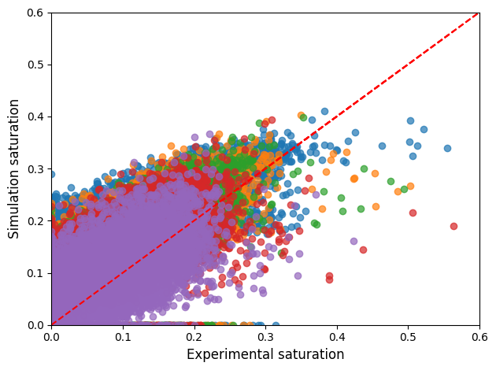
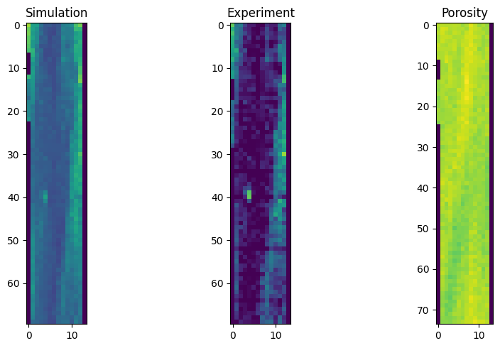
Note there are different methods to perform the optimization. These might yield different results. I am optimizing using gradient descent.
Permeability heterogeneity can also be added to the simulation:
\[ K_{i} =\; \frac{\bar{K} \phi_i}{\kappa_i^{2}\,\bar{\phi}} \]
The permeability of the voxel is related to the core averaged permeability using the ratio of the porosity of the voxel to the core averaged porosity and the \(\kappa\) value for that voxel. This assumes the Leverett J scaling is valid.
We can iterate on the capillary pressure heterogeneity to improve. Optimization can be done across all fractional flows, or a single observation. In this section, we will optimize using the fw = 0.05 experiment as CO₂ saturations are high, but the results are less influenced by the capillary end effects than for fw = 0.
N.B. for all plots in this section the Pearson coefficient is calculated to measure the fit between simulation and experimental data.
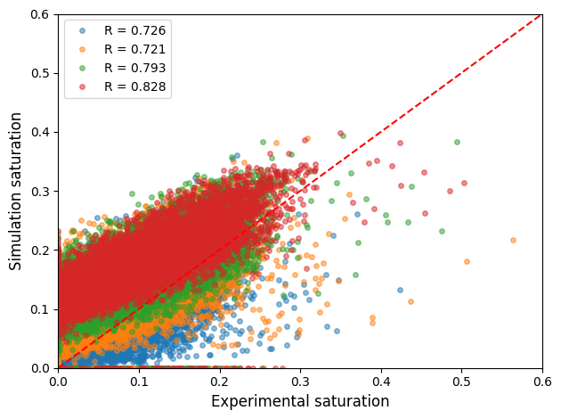
In Figure 10, the capillary pressure heterogeneity is optimized on a single experiment. This experiment, therefore, has the best fit when compared to the simulation. The lowest saturations are predicted poorly. This is due to the simulation not capturing the chanelling of the CO₂.
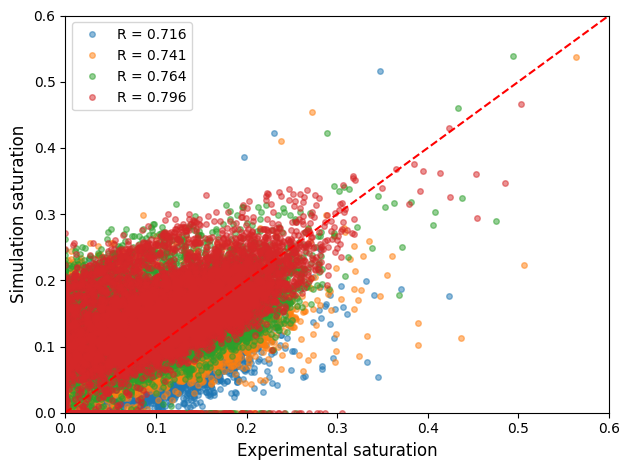
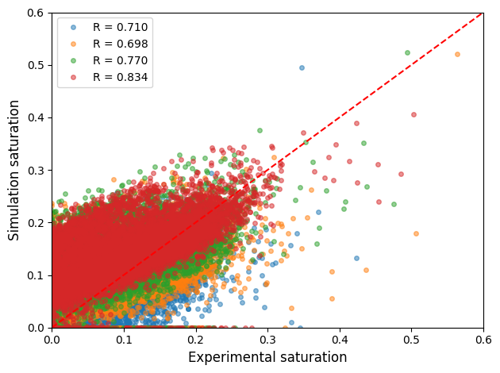
The addition of permeability heterogeneity in Figure 11 allows for a better prediction of the lower saturations. However, the correlation decreases between Figure 10 and Figure 11. We optimized the capillary pressure and permeability heterogeneity from this updated simulation to get Figure 12. The correlation here is slightly better for the experiment that was used in the optimization but worse for the other experiments.
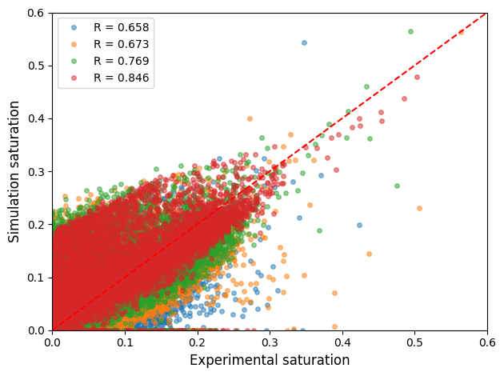
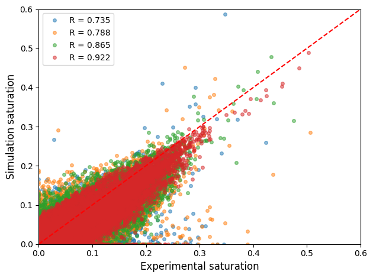
We know from the experiments, that the CO₂ travelled in distinct layers. The permeability heterogeneity calculated initially doesn't have extreme values. All values of permeability > 20mD were exaggerated by a factor of 5 in Figure 13 and 100 in Figure 14. The correlation between the simulation and the experiment with an exaggeration in the permeability leads to a good match between the simulation and experimental results.
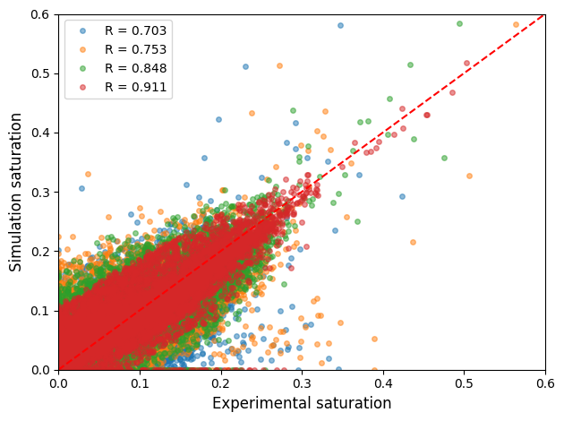
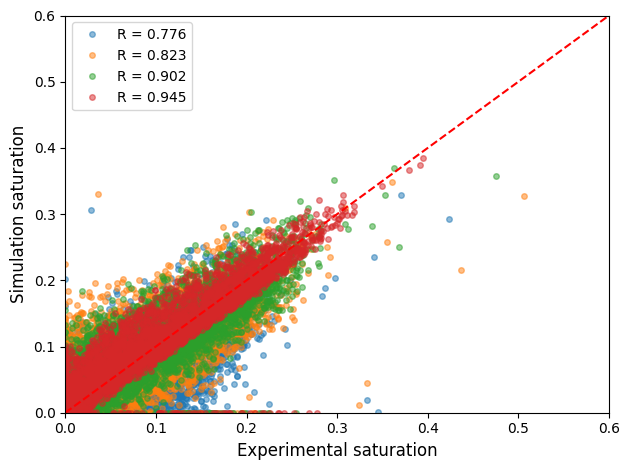
We add a simulation with 100% water flow at the beginning. We compare this pressure drop to the measured pressure drop from the permeability measurement. If they match, we assume we do a good job at the absolute permeabilty instead of making sure that the the geometric average matches. By manipulating the permeability of the voxels with CO₂ saturation > 0.1 until the pressure drop matches, we get a better fit. NB. the fit decreases towards the outlet, so if we only look at the initial half of the core, we get an even better fit.
The relative permeability influences dynamics. The input relative permeability curve might be different from the experimental one.
Cite as:
Spurin, Catherine. (April 2025). Exploring underlying pore-scale dynamics with the pressure data: Impact of cyclic CO₂ injection on residual trapping. https://cspurin.github.io/cyclic_inj/cyclic_inj_blog
Or
@article{spurin2025cwtcyclic,
title = "Exploring underlying pore-scale dynamics with the pressure data: Impact of cyclic CO₂ injection on residual trapping.",
author = "Spurin, Catherine",
journal = "cspurin.github.io",
year = "2025",
month = "April",
url = "https://cspurin.github.io/cyclic_inj/cyclic_inj_blog/"
}